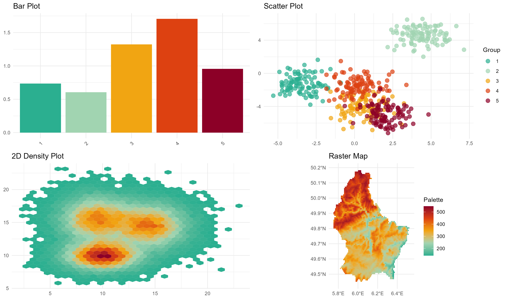
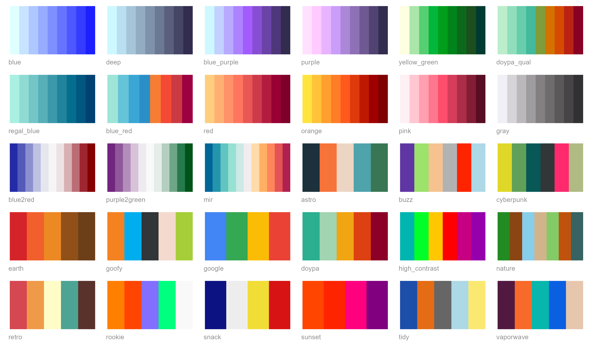

Overview
Tired of agonizing over color choices for your data visualizations? Let DOYPAColors do the heavy lifting for you! Our R package provides a delightful array of color palettes, each meticulously crafted to enhance your plots. With DOYPAColors, you can even let us surprise you with a palette choice, so you can focus on what matters most—telling your data’s unique story. Say goodbye to color selection headaches and hello to vibrant, eye-catching visuals! 🎨
Installation
To install DOYPAColors from CRAN, use:
install.packages("DOYPAColors")For the development version from GitHub, use:
if (!require("devtools")) {
install.packages("devtools")
}
devtools::install_github("jmestret/DOYPAColors")How to use
Using DOYPAColors is straightforward. Access and utilize our palettes in your R plots with a single line of code:
library(DOYPAColors)
color_palette <- doypa()You can then apply these palettes to your ggplot2 plots using the functions scale_fill_doypa() and scale_color_doypa():
library(ggplot2)
# Create a bar plot with a DOYPAColors palette
ggplot(iris, aes(x = Species, y = Sepal.Length, fill = Species)) +
geom_boxplot() +
scale_fill_doypa(discrete = TRUE) +
theme_classic()You can explore how specific palettes fit different types of data using the preview_pal() function:
preview_pal("doypa")
Available palettes
Here’s a visualization of all available palettes in DOYPAColors:

For more advanced usage and options, check out our web to get the most out of DOYPAColors palettes!
Contributing
We welcome contributions from the community! If you have a new color palette you’d like to share, we’d be thrilled to consider it for inclusion in DOYPAColors. To submit your palette:
- Provide a name for your palette.
- Specify the type of palette (sequential, diverging, or qualitative).
- List the HEX color codes for your palette.
You can submit your palette details by opening an issue or a pull request on our GitHub repository. We will review your submission and, if it meets our criteria, we’ll be glad to include it in the package!
How to cite
If you use DOYPAColors, please reference the R package as follows:
Jorge Mestre (2023). DOYPAColors: Don’t Overthink Your Palette of Colors. R package version 0.0.2, https://cran.r-project.org/web/packages/DOYPAColors